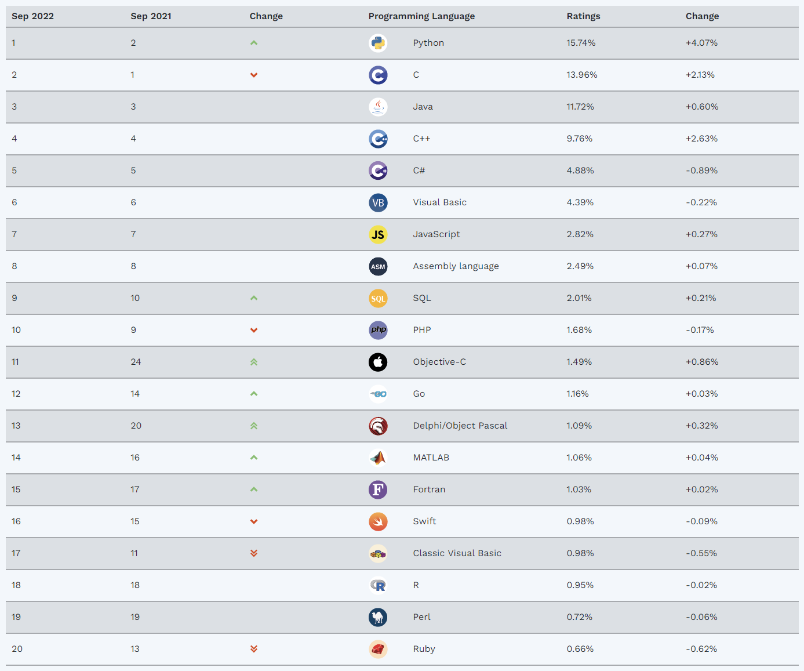
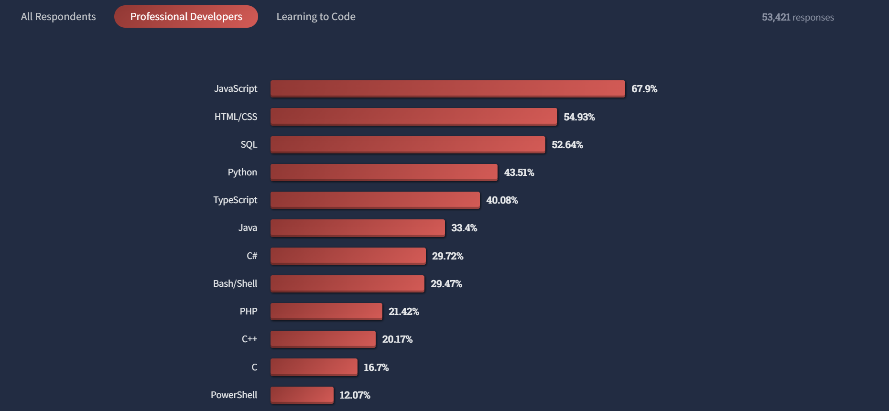

Hola!
Te quiero contar que, desde hace varias semanas, que estoy estudiando Python. Este sería mi tercer lenguaje de programación, luego de R y SQL.
Yo me dedico, principalmente, al análisis de datos y aplicaciones de inteligencia artificial, por lo cual este stack de tecnología me parece bastante potente.
A continuación te explico porqué decidí aprender Python y hacerlo de esta forma.
¿Por qué aprender Python?
Python es el lenguaje de programación “más famoso” en la actualidad a nivel mundial. Bueno, si no es el primero, está entre los 3 primeros seguro, va a depender de la encuesta que se mire (tiene una lucha a muerte con JavaScript jajaj). Pero es innegable que este lenguaje es ampliamente buscado y las ofertas laborales son cada vez más necesitadas, en especial, en temas de análisis de datos, inteligencia artificial, IoT y backend.
Si miramos Google Trends, podemos ver que el interés por este lenguaje de programación ha ido creciendo, en especial, desde el 2015 en adelante.
Posiblemente eso tenga relación con el auge de la inteligencia artificial, en donde Python es uno de los lenguajes más usados.
Por otra parte, si revisamos el TIOBE Index para el mes de septiembre 2022, vemos que Python se posiciona en el primer puesto del ranking, con tendencia al alza respecto del mes pasado.

En la encuesta 2022 de desarrolladores que hace StackOverflow, nuevamente vemos a Python entre los primeros lugares de los lenguajes más usados.

A ver, que un lenguaje sea el más buscado, más famoso y esas cosas no es tan importante. La verdad que lo que debería ser determinante es la utilidad que te ofrece aprenderlo. En mi caso, me sirve 😎, pues para temas de análisis de datos es uno de los más relevantes en la actualidad.
¿Por qué hacer una web?
En aprendiendopython.com estoy documentando gran parte de lo que voy estudiando sobre Python.
Decidí hacer eso por varios motivos…
- Me gusta enseñar y me parece que puedo contribuir en ese sentido.
- La mejor forma de estudiar y aprender algo, es enseñándolo. Al explicárselo a otras personas, el aprendizaje es mucho más significativo y la curva es mucho más rápida. Esta es una metodología que uso bastante.
- A pesar de que estoy recién aprendiendo Python, ya tengo conocimientos en programación (soy programador desde hace un par de años), lo cual hace que aprender un nuevo lenguaje sea mucho más simple. Sin embargo, en este proyecto decidí obviar un poco mis conocimientos previos e intentar explicar todo desde los más simple y básico, de modo que cualquiera pueda entenderlo. O, al menos, esa es mi intención.
- Ir documentando mi aprendizaje me ayuda a ir dejando un manual de estudio y notas para el futuro. En general, uno se puede aprender gran parte de las cosas de memoria y entender la lógica, pero la sintaxis puede que se olvide. El contar con este material de apoyo me permitirá tener acceso simple a esas cosas si es que lo llegara a necesitar.
Basado en proyectos
Además de enseñar lo que se va aprendiendo, otra forma de ir consolidando de mejor forma los conocimientos, es el realizar proyectos.
Llevar a la práctica distintas cosas, en proyectos pequeños, pero que permitan entender el funcionamiento del lenguaje.
Ya hice uno y lo tengo publicado. Es un pequeño script para identificar el signo del zodiaco chino que te corresponde, según el año de nacimiento.
year = int(input("Ingresa el año de nacimiento: "))
def chinese_zodiac(year:int):
elements = ("madera", "fuego", "tierra", "metal", "agua")
animals = ("rata", "buey", "tigre", "conejo", "dragón", "serpiente", "caballo", "oveja", "mono", "gallo", "perro", "cerdo")
if year < 604:
print("El ciclo sexagenario chino comenzó en el año 604. Debes introducir un año adecuado.")
else:
sexagenary_year = (year - 4) % 60
element = elements[int((sexagenary_year % 10) / 2)]
animal = animals[int(sexagenary_year % 12)]
print(f"Año: {year} / Zodiaco: {animal} de {element}")
chinese_zodiac(year)Pero está lleno de otros cursos…
Efectivamente. Python, al ser uno de los lenguajes más famosos, está lleno de tutoriales, cursos, videos en YouTube y libros, tanto de pago como, en su mayoría, gratuitos. Además, la documentación oficial de Python es bastante buena.
Entonces, ¿Qué aporta aprendiendopython a la comunidad?
Primero. Yo no lo llamaría un curso. Porque no está diseñado para ser eso. Como te mencionaba antes, lo que estoy documentando es mi ruta de aprendizaje, no estoy haciendo un curso. Pero, a pesar de eso, puede cumplir esa función, principalmente, pues me he dedicado bastante a explicar los conceptos, dar muchos ejemplos y no dar cosas por obvias. Me parece que muchos cursos fallan en eso. Explican cosas muy por encima y no se detienen a explicarlas de forma clara.
Por otro lado, el ritmo no es muy rápido. No es como esos cursos que te prometen que en 4 horas aprendes a programar y puedes tener el trabajo de tus sueños. Eso es mucha fantasía y te venden algo que no es así. Como todo en la vida, si quieres lograr las metas, debes dedicarle mucho tiempo, ser perseverante y seguir adelante, aún cuando las cosas no te salgan. Como acá estoy documentando mis estudios, puede que le dedique más tiempo a algunos temas que a otros, o que sea repetitivo en varias ocasiones.
Sin embargo, esto es jústamente lo que lo hace diferente y especial. Pues yo también lo estoy estudiando, por lo que esa expereincia de estudio y descubrimiento es muy valiosa, cosa que no ocurre en cursos o libros, donde todo está maqueteado. Acá te comento cosas que me funcionan y las que no, te hablo desde mi experiencia. Esto lo hace una forma muy especial de aprender. Es como ir al cine a ver una películay comentar con un amigo mas mejores escenas, fallas y opiniones. Esa es una experiencia mucho más entretenida que solo ir al cine. Bueno, acá es lo mismo.
Ok.
Te dejo cordialmente invtada/o a seguir el aprendizaje de Python conmigo.
👉 Recuerda visitar aprendiendopython.com
Nos vemos!!